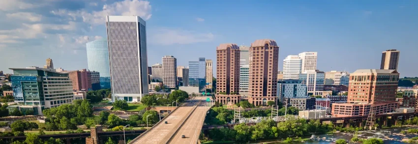
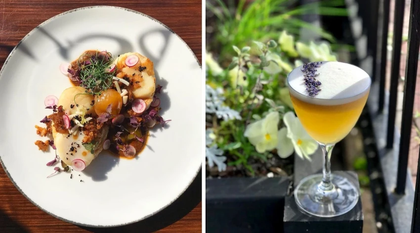
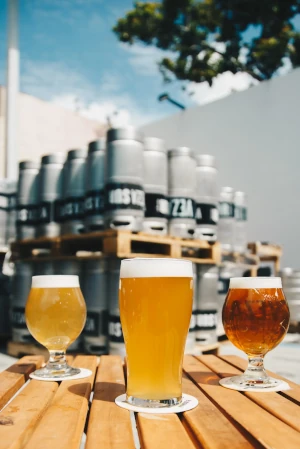
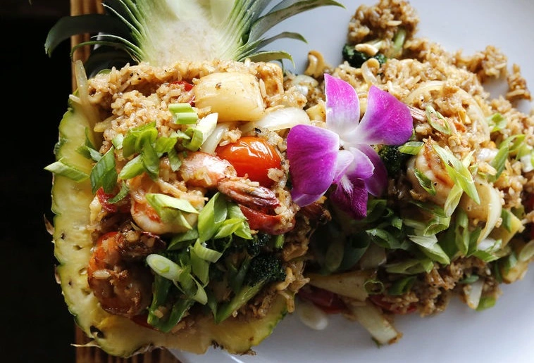

Keep it Local RVA
The Best Restaurants in Richmond, VA

Richmond's flourishing restaurant scene has something for everyone.
For a comprehensive view of all the best restaurants Richmond, Virginia has to offer - check out the Keep It Local RVA app. It was made by a Richmonder to provide information about all of the great local restaurants for free! See all the restaurants in the web-app.
Richmond, Virginia is a city with a rich history and diverse culture, reflected in its dining scene. From classic southern cuisine to innovative fusion dishes, there's something for every taste in Richmond. In this article, we'll explore some of the top restaurants in the city, including both well-known and lesser-known gems.
One popular spot for classic southern cuisine is Southern Kitchen. Located in Jackson Ward, this cozy restaurant serves up dishes like fried oysters, shrimp po' boys, and chicken n waffles. Their popularity has warranted a separate takeout location right across the street. In addition to their delicious food, Southern Kitchen also has a refreshing selection of lemonades and sweet tea. See Southern Kitchen's menu here.
For a taste of international flavors, head to Lemon Cuisine of India. This contemporary Indian restaurant, located on Broad between Scott's Addition and the Museum District, serves up dishes like tandoori chicken, lamb vin d'Alho, and paneer tikka masala. The menu also features a selection of desserts including Gulab Jamun - Light pastry balls in cardamom infused syrup with a coconut garnish, and Kheer - traditional Indian rice pudding with nuts, rosewater and cardamom. Check out their full menu here.
If you're in the mood for Italian food, you can't go wrong with La Grotta Ristorante. Located in the heart of downtown Richmond, this intimate spot serves up dishes like Gnocchi al Filetto di Pomodoro, Antipasto Del Giorno, and Linguine alla Scogliera. The restaurant also has an extensive wine list, featuring bottles from Italy and beyond. Make sure to make a reservation on high volume days.
For something a little more laid-back, check out The Fancy Biscuit. This popular brunch spot, located in the historic Fan District, serves up dishes like chicken sandwiches, quiche, and a tomato basil bisque soup. The restaurant has a laid-back atmosphere and is a great spot for a leisurely meal with friends. Their menu is available here.
If you're in the mood for seafood, head to The Hard Shell. Located in Shockoe Slip, this popular spot serves up dishes like lobster tail, seared scallops, and crab cakes. The restaurant has extensive raw bar and a selection of craft cocktails as well. Check out their website.
For something a little more upscale, check out The Roosevelt. This sophisticated restaurant, located in the Church Hill neighborhood, serves up dishes like Bissap Crusted Tuna, Tempura Fried Rapini, and Confit Turkey Leg Gumbo. The restaurant also has a well-regarded wine list, featuring bottles from around the nation. Bask in their selection here.

Image: rooseveltrva.com
For a taste of Richmond's vibrant food truck scene, head to the Richmond Food Truck Association on their website here. This popular website features an interactive map with a selection of food trucks, serving up dishes like tacos, sandwiches, and barbecue. The Richmond Food Truck Association is a great way to find a casual meal, and there's something for everyone.
 For a taste of Richmond's growing craft beer scene, head to The Veil Brewing Co. Located in the Scott's Addition neighborhood, this popular brewery serves up a wide range of beers, including IPAs, stouts, and sours. The brewery also has a small food menu, featuring mexican fare like tacos and burritos.
Another popular spot for craft beer is Stone Brewing. Located near Fulton Hill and Rocketts Landing, this brewery serves up a wide range of beers, including lagers, pilsners, and sours. The brewery is the largest in Richmond and features a tap room with a dog friendly patio.
No matter what type of cuisine you're in the mood for, Richmond has a restaurant to suit your tastes. From classic southern dishes to international flavors, there's something for everyone in this vibrant city.
Richmond, Virginia is a city with a thriving dining scene, but sometimes it can be hard to find the truly hidden gems among all the well-known restaurants. In this article, we'll explore some lesser-known restaurants in Richmond that are well worth seeking out.
One hidden gem in Richmond is The Locker Room. Located in between Forest Hill and Westover Hills, this dive bar has a surprisingly good karaoke scene. You'll leave reeking of cigarettes and rail bourbon and probably wont remember most of your night. They don't have a website - are you kidding? You can find them on facebook though if you really want to.
Another hidden gem in Richmond is The Hill Cafe. Located in the Church Hill neighborhood, this charming spot serves up dishes like Pork Tenderloin, Fried Oysters, and New England Clam Chowder. The restaurant has a cozy atmosphere and a great selection of wines and cocktails. The Hill Cafe is a great spot for a casual lunch or dinner.
If you're in the mood for Pizza, check out La Vera Pizza. Located in up and coming Manchester, this authentic Sicilian Pizzeria serves up pizza in New York and Sicillian styles. The calzones and pasta dishes are also widely popular. If you're not in the mood for going out, you can always order delivery from them here.
For a taste of international flavors, head to Sabai. Located across from the Science Museum, this Thai restaurant serves up dishes like pad thai, curries, and hot pot. The restaurant has an authentic atmosphere and a great selection of craft beers and wines. They also has a separate club with live music called The Jungle Room.

Image: sabairva.com
If you're in the mood for seafood, check out The Boathouse at Rocketts Landing. Located on the James River, this charming spot serves up dishes like filet mignon, oysters Rockefeller, and crab cakes. The restaurant has a balcony overlooking the river and a great selection of craft beers and wines. The Boathouse is a great spot for lunch or dinner with a view. There are several locations so check their website for the location nearest you.
For something a little more upscale, check out The Tobacco Company. Located in the Shockoe Slip neighborhood, this sophisticated spot serves up dishes like Cajun catfish, seared scallops, and a vegetable lasagna. The restaurant has a sophisticated atmosphere and a well-regarded wine list, featuring bottles from around the world. The Tobacco Company Restaurant is a great spot for a special occasion or date night.
Another hidden gem in Richmond is Nile Restaurant. Located in Church Hill, this charming spot serves up authentic ethiopean cuisine. The restaurant has a cozy atmosphere and an outside seating area with a plethora of nearby parks. Soak in the Church Hill atmosphere while enjoying a taste of Africa.
If you're in the mood for Mexican food, check out Margaritas Cantina. Located in Shockoe Bottom, this spot serves up dishes like tacos, burritos, and quesadillas. The restaurant has a laid-back atmosphere and a great selection of craft beers and margaritas. Margaritas Cantina is a great spot for a night out with friends.
No matter what type of cuisine you're in the mood for, Richmond has a hidden gem restaurant to suit your tastes. From classic southern dishes to international flavors, there's something for everyone in this vibrant city. So next time you're looking for a new dining destination, consider exploring one of these lesser-known restaurants in Richmond.